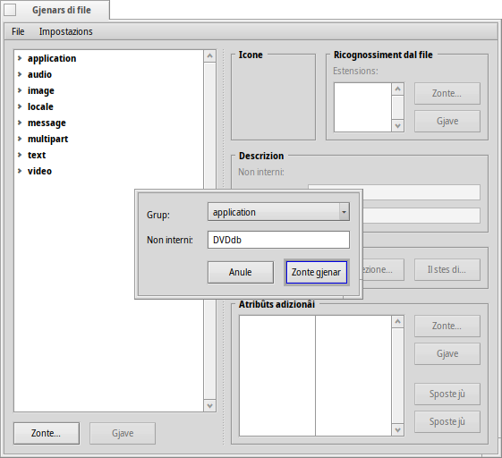
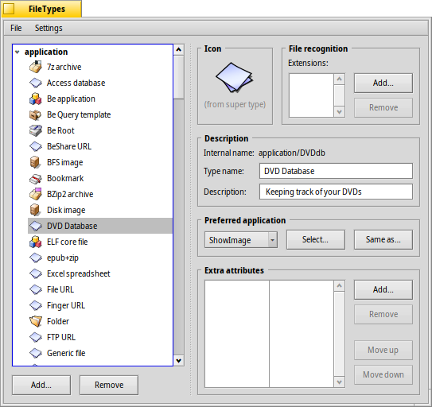
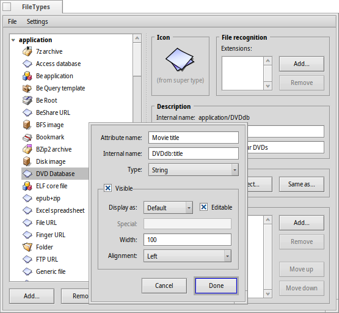
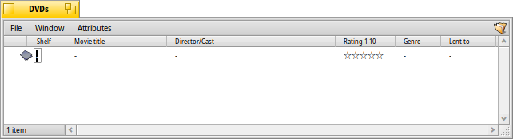
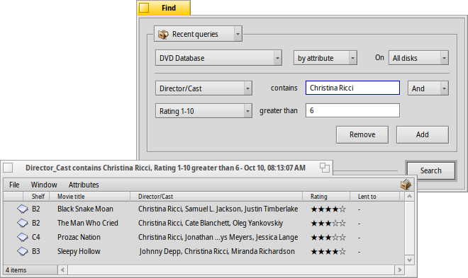

| Tabele |
|
Preparazions Creâ un gjenar di file personalizât Icone Ricognossiment dal file Descrizion Aplicazion preferide Atribûts adizionâi Meti te tabele Jemplâ cui dâts Interogâ la base di dâts |
Laboratori: gjenars di file, atribûts, tabele e interogazions
Chest al è un laboratori par mostrâ cemût doprâ i Atribûts, lis Interogazions, la Tabele e i Gjenars di file personalizâts. Come esempli, o costruìn une base di dâts par tignî note de nestre scansie di DVDs.
 Preparazions
Preparazions
Prime di dut o decidarìn ce gjenar di file e cuâl atribût nus pues coventâ pal nestri lavôr. In origjin, o vevi planificât di doprâ un file-segnelibri cuntun colegament ae pagjine IMdB dal filmât, ma viodût che chê volte Haiku nol veve un navigadôr cui segnelibris come il NetPositive di BeOS, mi soi inventât chê robe achì: il stes file al sarà une imagjin JPEG pe cuvierte dal filmât.
Cun WebPositive, Haiku cumò al à di gnûf un navigadôr che al dopre i files-segnelibris, duncje tu puedis ancje doprâ un file-segnelibri invezit di une imagjin come gjenar di file di base pai nestris files de base di dâts.
Dut câs, a chescj files o zontìn un pâr di atribûts. Chi o vin di decidi se o desiderìn interogâju plui indenant (alore o vin di zontâju ae tabele) e in câs, ce gjenar di atribût che al à di sei. I numars (int, float) a puedin jessi valutâts in maniere diferente rispiet al test (</=/> vs. is/contains/starts with).
Chi a son i atribûts che o desideri viodi pai miei DVDs:
- Titul dal film
- Gjenar
- URL a p.e. IMdB
- Regjist/Atôrs
- Trame
- Mê valutazion di 1 a 10
- Coordenadis te mê scansie, p.e. A2, B3, cussì o cjati il DVD ancje te vite reâl :)
- Tal câs, a cui che o ai prestât il disc...
Creâ un gjenar di file personalizât
Invie lis preferencis dai Gjenars di file e fâs clic sul boton sot de liste jerarchiche a çampe. Si vierç un piçul dialic e tu specifichis in cuâl Grup MIME al à di stâ il to gnûf gjenar di file. Tu puedis ancje creâ un grup gnûf dal dut. Metìnlu in "applications" e met "Non interni" tant che DVDdb.
Cumò, si vierç un panel pal to gnûf gjenar di file DVDdb:

Icone
Fâs dopli clic sul ricuadri de icone par vierzi Icon-O-Matic cussì di dissegnâ une icone pal to gjenar di file. Tu puedis ancje strissinâ e molâ une icone che si cjate tal ricuadri de icone di un altri gjenar di file, magari come inizi par une version modificade.
Ricognossiment dal file
Tu puedis zontâ sufìs come .txt, .jpg, .mp3 par ricognossi i files midiant la lôr estension. Util cuant che si lavore cui files di altris sistemis cence i gjenars MIME. Pal nestri esempli no vin bisugne di chest.
Descrizion
- Non dal gjenar - Al ven fûr p.e. tal menù "Atribûts" dai barcons Tracker e l'atribût "Gjenar" di un file.
- Descrizion - Une descrizion un tic plui detaiade.
Aplicazion preferide
Chest menù a tende al mostre une liste di dutis lis aplicazions che a puedin gjestî chest particolâr gjenar di file. Di chi tu puedis sielzi cuâl program al à di vierzi chest specific file cuant che al ricêf il dopli clic.
| al vierç un dialic dai files dulà che tu sielzis la aplicazion di vierzi cun chest gjenar di file. Chi o configurìn ShowImage par visualizâ la cuvierte dal DVD. | ||
| al vierç un dialic dai files dulà che tu sielzis cualsisei file che al à za configurade la aplicazion preferide che tu stâs cirint. |
Atribûts adizionâi
Chi o inserìn ducj i atribûts personalizâts che o vin decidût tai nestris preparatîfs. Fasint clic sul boton si vierç un panel par inserî ducj i dâts pal gnûf atribût. Tu puedis modificâ un atribût esistent cuntun dopli-clic.
Non atribût - Al ven fûr p.e. come intestazion di colone tai barcons di Tracker.
Non interni - Al ven doprât pe tabele e par interogâ l'atribût.
- Gjenar - Al definìs il valôr che l'atribût al à di tignî e duncje cemût che al pues jessi interogât.
- pal test normâl
- pai dâts binaris: 0 (fals) o >=1 (vêr)
- pai numars intîrs cun intervai diferents:
- : di -128 a 127
- : di -32.768 a 32.767
- : di -2.147.483.648 a 2.147.483.647
- : di -9.223.372.036.854.775.808 a 9.223.372.036.854.775.807
- pai numars in virgule mobile a singule precision
- pai numars in virgule mobile a dople precision
- pal formât date e ore
- Visibil - Cheste casele di selezion e determine se l'atribût al è visibil dal dut intun barcon di Tracker. Viodût che il Tracker al sarà la interface pe nestre base di dâts dai DVDs, o vin di segnâle e definî il so aspiet cun:
- - Lasse su "Predefinît" se si à di visualizâ i valôrs in base al "Gjenar" dal atribût (p.e. stringhe/intîr/virgule mobile e v.i.). Lis altris opzions a son:
- - Tu puedis doprâlu par mostrâ un di doi simbui, viôt chi sot.
- - Al mostre un intîr tant che 1/60, p.e. "90" al devente "1:30".
- - Al mostre une valutazion tra 0 e 10 come stelutis.
- - Al determine se al è pussibil modificâ l'atribût in Tracker.
- - Al definìs i doi simbui doprâts par une visualizazion di casele di selezion. Par esempli, "xo" al mostrarà une "x" par ducj i valôrs >0 e "o" par 0.
- - La largjece predefinide de colone di chel atribût intai barcons Tracker.
- - Al è pussibil visualizâ l'atribût inliniât a çampe, tal mieç e a drete.
- - Lasse su "Predefinît" se si à di visualizâ i valôrs in base al "Gjenar" dal atribût (p.e. stringhe/intîr/virgule mobile e v.i.). Lis altris opzions a son:
Cumò, o inserìn dutis lis informazions pai nestris atribûts:
| Non interni | Gjenar di atribût | te tabele? | Descrizion |
|---|---|---|---|
| DVDdb:titul | test | sì | Titul dal film |
| DVDdb:gjenar | test | sì | Gjenar |
| DVDdb:url | test | no | URL |
| DVDdb:atôrs | test | sì | Regjist/Atôrs |
| DVDdb:trame | test | no | Trame |
| DVDdb:valutazion | intîr-32 | sì | Valutazion di 1 a 10 |
| DVDdb:coordenade | test | no | Scansie |
| DVDdb:prestât | test | sì | Prestât a |
Meti te tabele
Prime di scomençâ a inserî i dâts te nestre piçule base di dâts dai DVDs, o vin di zontâ cierts atribûts ae Tabele. Dome i atribûts metûts te tabele a puedin doprâ lis sveltis Interogazions di Haiku.
Duncje, ce cirarìno un doman? Probabilmentri no domandarìn "Ce isal te coordenade B4 te mê scansie?" o "L'URL dal IMdB o la trame dal film contegnino la peraule 'pape-shenouda'?".
Chest nus lasse chescj atribûts:
| Non interni | Gjenar di atribût |
|---|---|
| DVDdb:titul | test |
| DVDdb:gjenar | test |
| DVDdb:atôrs | test |
| DVDdb:valutazion | intîr-32 |
Par metiju te tabele, o vierzìn un Terminâl e semplicementri o zontìn par ordin i atribûts:
mkindex -t string DVDdb:titul mkindex -t string DVDdb:gjenar mkindex -t string DVDdb:atôrs mkindex -t int DVDdb:valutazion
La opzion -t e definìs il gjenar di atribût, che al è par ducj "string" (stringhe) infûr di valutazion, che al è un numar intîr.
Jemplâ cui dâts
Cumò, dut al è stât configurât e o podìn scomençâ a meti cualchi dât te nestre base di dâts.
Viodût che il nestri file di base al è une imagjin di cuvierte, o nin su cualchi risorse in rêt come IMdB, o cirìn il nestri prin film e o salvìn la cuvierte o il poster dal filmât intune gnove cartele, dulà che o desiderìn tignî i nestris files DVDdb.
Vierzint chê cartele o viodìn un tipic barcon di Tracker cuntun JPEG dentri. Fasint clic diestri su di lui, o cambìn il so gjenar di file a application/DVDdb cul Component adizionâl Gjenar di file. Tu âs plui informazions in merit tal document Gjenars di file.
Cumò, o ativìn ducj i nestris atribûts DVDdb dal menù dal barcon di Tracker e o metìn in ordin daûr dal nestri gust:
Fasint clic suntun atribût ancjemò vueit (o fracant ALT E) o jentrìn in modalitât modifiche e o jemplìn ducj i atribûts. Cun TAB e MAIUSC TAB tu puedis passâ di un atribût a chel altri.
Tal nestri esempli, o scomencìn di solit cuntune cuvierte JPEG discjariade e o cambìn il so gjenar a applications/DVDdb. E je une altre maniere elegante par produsi un file e lavorâi sore. Al baste copiâ un file vueit dal nestri gjenar di file su /boot/home/config/settings/Tracker/Tracker New Templates e cambiâi non in DVDdb.
Fasint clic diestri intun barcon di Tracker, tu cjatarâs une gnove vôs sot di dopo dal predefinît "Gnove cartele".
Interogâ la base di dâts
Diviersis oris di dûr lavôr dopo, o vin une ninine base di dâts che tu puedis interogâ par cjatâ ducj i tiei films di Christina Ricci che a àn une valutazion di 7+... :)
Tu puedis assegnâ un scheme sensât pe disposizion dai atribûts tai risultâts des interogazions di un specific gjenar di file.
Vierç la cartele che e conten i tiei files DVDdb e met in ordin i atribûts come che ti plâs vê presentâts i risultâts des interogazions. Copie cheste disposizion cun .
Vierç /boot/home/config/settings/Tracker/DefaultQueryTemplates, cree une gnove cartele e clamile group/filetype, sostituint lis sbaris cun liniutis bassis; tal nestri câs "application_DVDdb".
Vierç la gnove cartele e tache dentri la disposizion cun . Voilà:
